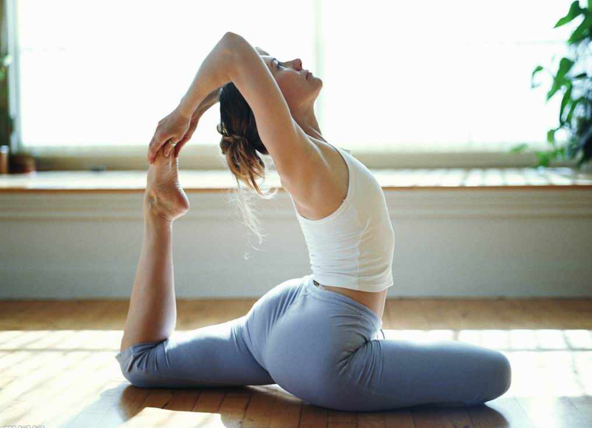

筋膜瑜珈______________________________
運用身體的自身重量，搭配平衡軸、經絡球及相關輔具，來放鬆過於緊繃的肌群和筋膜。對於跑者常有的足底筋膜炎和跑者膝，均有良好的紓緩效果。上完一堂筋膜瑜珈課，有如為自己做一次深度按摩，推薦給喜愛運動者或是身心緊繃的上班族。 建議於課堂前2小時內不要進食，且於瑜珈課程結束後應多補充水分。不建議孕婦及具有開放性傷口的學員練習。
|  |
|
|||||||
| 回首頁 | 筋膜瑜珈 | 哈達瑜珈 | 修復瑜珈 |
|
||||
|
|
||||||||
筋膜瑜珈______________________________ 運用身體的自身重量，搭配平衡軸、經絡球及相關輔具，來放鬆過於緊繃的肌群和筋膜。對於跑者常有的足底筋膜炎和跑者膝，均有良好的紓緩效果。上完一堂筋膜瑜珈課，有如為自己做一次深度按摩，推薦給喜愛運動者或是身心緊繃的上班族。 建議於課堂前2小時內不要進食，且於瑜珈課程結束後應多補充水分。不建議孕婦及具有開放性傷口的學員練習。 | ||||||||